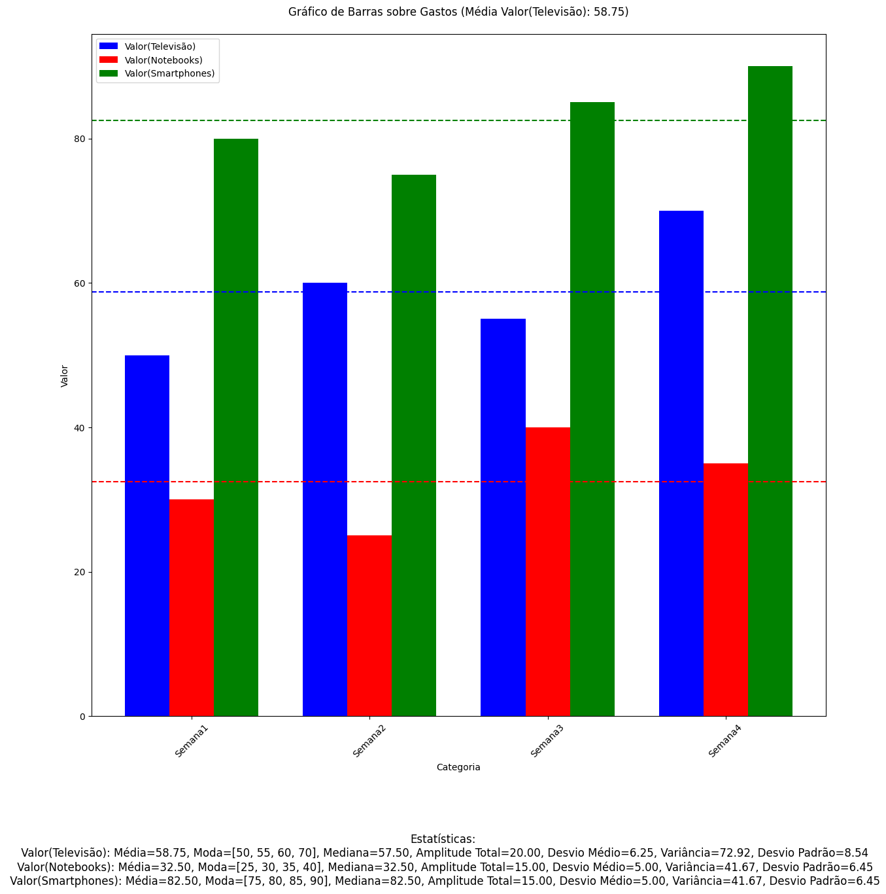

Programação:
import pandas as pd
import matplotlib.pyplot as plt
import requests
from io import StringIO
# URL do arquivo .csv no GitHub (use o URL bruto)
url = 'https://raw.githubusercontent.com/guicolletti/sadfasd/main/doe'
# Baixa o conteúdo do arquivo .csv
response = requests.get(url)
content = response.text
# Usa StringIO para ler o conteúdo como se fosse um arquivo CSV
data = StringIO(content)
df = pd.read_csv(data) # Lê o conteúdo como um DataFrame
# Verificar as primeiras linhas e os nomes das colunas do DataFrame
print("Primeiras linhas do DataFrame:")
print(df.head())
print("\nNomes das colunas do DataFrame:")
print(df.columns.tolist())
# Solicita ao usuário o tipo de gráfico desejado
tipo = input("Digite o tipo de gráfico desejado (barra, pizza, linha): ").strip().lower()
# Verifica se as colunas necessárias existem
colunas_esperadas = ['Categoria', 'Valor(Televisão)', 'Valor(Notebooks)', 'Valor(Smartphones)']
colunas_presentes = df.columns.tolist()
# Verifica a presença das colunas
for coluna in colunas_esperadas:
if coluna not in colunas_presentes:
print(f"A coluna {coluna} não foi encontrada no DataFrame.")
print("Colunas disponíveis:", colunas_presentes)
break
else:
# Converte as colunas de valores para numérico, forçando erros a NaN e substituindo por 0
for coluna in colunas_esperadas[1:]: # Ignora 'Categoria'
if coluna in colunas_presentes:
df[coluna] = pd.to_numeric(df[coluna], errors='coerce').fillna(0)
# Calcula as estatísticas
def calcular_estatisticas(coluna):
return {
'Moda': df[coluna].mode().tolist(),
'Mediana': df[coluna].median(),
'Amplitude Total': df[coluna].max() - df[coluna].min(),
'Desvio Médio': df[coluna].apply(lambda x: abs(x - df[coluna].mean())).mean(),
'Variância': df[coluna].var(),
'Desvio Padrão': df[coluna].std(),
'Média': df[coluna].mean()
}
estatisticas_tele = calcular_estatisticas('Valor(Televisão)') if 'Valor(Televisão)' in colunas_presentes else {}
estatisticas_note = calcular_estatisticas('Valor(Notebooks)') if 'Valor(Notebooks)' in colunas_presentes else {}
estatisticas_smart = calcular_estatisticas('Valor(Smartphones)') if 'Valor(Smartphones)' in colunas_presentes else {}
# Cria o gráfico de acordo com a escolha do usuário
plt.figure(figsize=(12, 12))
if tipo == "pizza":
# Agrega os valores das diferentes colunas para o gráfico de pizza
valores = df[['Valor(Televisão)', 'Valor(Notebooks)', 'Valor(Smartphones)']].sum()
labels = valores.index
plt.pie(valores, labels=labels, autopct='%1.1f%%', startangle=140)
plt.title('Gráfico de Pizza sobre Gastos', pad=20)
plt.axis('equal') # Garante que o gráfico de pizza seja circular
plt.figtext(0.5, -0.1,
f'Média dos valores:\n Valor(Televisão): {estatisticas_tele["Média"]:.2f}\n'
f' Valor(Notebooks): {estatisticas_note["Média"]:.2f}\n'
f' Valor(Smartphones): {estatisticas_smart["Média"]:.2f}\n\n'
f'Estatísticas:\n'
f' Valor(Televisão): Moda={estatisticas_tele["Moda"]}, Mediana={estatisticas_tele["Mediana"]:.2f}, '
f'Amplitude Total={estatisticas_tele["Amplitude Total"]:.2f}, Desvio Médio={estatisticas_tele["Desvio Médio"]:.2f}, '
f'Variância={estatisticas_tele["Variância"]:.2f}, Desvio Padrão={estatisticas_tele["Desvio Padrão"]:.2f}\n'
f' Valor(Notebooks): Moda={estatisticas_note["Moda"]}, Mediana={estatisticas_note["Mediana"]:.2f}, '
f'Amplitude Total={estatisticas_note["Amplitude Total"]:.2f}, Desvio Médio={estatisticas_note["Desvio Médio"]:.2f}, '
f'Variância={estatisticas_note["Variância"]:.2f}, Desvio Padrão={estatisticas_note["Desvio Padrão"]:.2f}\n'
f' Valor(Smartphones): Moda={estatisticas_smart["Moda"]}, Mediana={estatisticas_smart["Mediana"]:.2f}, '
f'Amplitude Total={estatisticas_smart["Amplitude Total"]:.2f}, Desvio Médio={estatisticas_smart["Desvio Médio"]:.2f}, '
f'Variância={estatisticas_smart["Variância"]:.2f}, Desvio Padrão={estatisticas_smart["Desvio Padrão"]:.2f}',
ha='center', va='center', fontsize=12)
elif tipo == "barra":
categorias = df['Categoria']
valores_tele = df['Valor(Televisão)'] if 'Valor(Televisão)' in colunas_presentes else [0] * len(categorias)
valores_note = df['Valor(Notebooks)'] if 'Valor(Notebooks)' in colunas_presentes else [0] * len(categorias)
valores_smart = df['Valor(Smartphones)'] if 'Valor(Smartphones)' in colunas_presentes else [0] * len(categorias)
width = 0.25
x = range(len(categorias))
x_tele = [i - width for i in x]
x_note = x
x_smart = [i + width for i in x]
plt.bar(x_tele, valores_tele, width=width, color='blue', label='Valor(Televisão)')
plt.bar(x_note, valores_note, width=width, color='red', label='Valor(Notebooks)')
plt.bar(x_smart, valores_smart, width=width, color='green', label='Valor(Smartphones)')
plt.title(f'Gráfico de Barras sobre Gastos (Média Valor(Televisão): {estatisticas_tele["Média"]:.2f})', pad=20)
plt.xlabel('Categoria')
plt.ylabel('Valor')
plt.xticks(x, categorias, rotation=45)
plt.legend()
# Adiciona linha de média para cada conjunto de valores
if 'Valor(Televisão)' in colunas_presentes:
plt.axhline(y=estatisticas_tele['Média'], color='blue', linestyle='--', label='Média Valor(Televisão)')
if 'Valor(Notebooks)' in colunas_presentes:
plt.axhline(y=estatisticas_note['Média'], color='red', linestyle='--', label='Média Valor(Notebooks)')
if 'Valor(Smartphones)' in colunas_presentes:
plt.axhline(y=estatisticas_smart['Média'], color='green', linestyle='--', label='Média Valor(Smartphones)')
plt.figtext(0.5, -0.1,
f'Estatísticas:\n'
f' Valor(Televisão): Média={estatisticas_tele["Média"]:.2f}, Moda={estatisticas_tele["Moda"]}, Mediana={estatisticas_tele["Mediana"]:.2f}, '
f'Amplitude Total={estatisticas_tele["Amplitude Total"]:.2f}, Desvio Médio={estatisticas_tele["Desvio Médio"]:.2f}, '
f'Variância={estatisticas_tele["Variância"]:.2f}, Desvio Padrão={estatisticas_tele["Desvio Padrão"]:.2f}\n'
f' Valor(Notebooks): Média={estatisticas_note["Média"]:.2f}, Moda={estatisticas_note["Moda"]}, Mediana={estatisticas_note["Mediana"]:.2f}, '
f'Amplitude Total={estatisticas_note["Amplitude Total"]:.2f}, Desvio Médio={estatisticas_note["Desvio Médio"]:.2f}, '
f'Variância={estatisticas_note["Variância"]:.2f}, Desvio Padrão={estatisticas_note["Desvio Padrão"]:.2f}\n'
f' Valor(Smartphones): Média={estatisticas_smart["Média"]:.2f}, Moda={estatisticas_smart["Moda"]}, Mediana={estatisticas_smart["Mediana"]:.2f}, '
f'Amplitude Total={estatisticas_smart["Amplitude Total"]:.2f}, Desvio Médio={estatisticas_smart["Desvio Médio"]:.2f}, '
f'Variância={estatisticas_smart["Variância"]:.2f}, Desvio Padrão={estatisticas_smart["Desvio Padrão"]:.2f}',
ha='center', va='center', fontsize=12)
elif tipo == "linha":
categorias = df['Categoria']
valores_tele = df['Valor(Televisão)'] if 'Valor(Televisão)' in colunas_presentes else [0] * len(categorias)
valores_note = df['Valor(Notebooks)'] if 'Valor(Notebooks)' in colunas_presentes else [0] * len(categorias)
valores_smart = df['Valor(Smartphones)'] if 'Valor(Smartphones)' in colunas_presentes else [0] * len(categorias)
plt.plot(categorias, valores_tele, marker='o', color='blue', label='Valor(Televisão)')
plt.plot(categorias, valores_note, marker='o', color='red', label='Valor(Notebooks)')
plt.plot(categorias, valores_smart, marker='o', color='green', label='Valor(Smartphones)')
plt.title(f'Gráfico de Linhas sobre Gastos (Média Valor(Televisão): {estatisticas_tele["Média"]:.2f})', pad=20)
plt.xlabel('Categoria')
plt.ylabel('Valor')
plt.xticks(rotation=45)
plt.legend()
# Adiciona linha de média para cada conjunto de valores
if 'Valor(Televisão)' in colunas_presentes:
plt.axhline(y=estatisticas_tele['Média'], color='blue', linestyle='--', label='Média Valor(Televisão)')
if 'Valor(Notebooks)' in colunas_presentes:
plt.axhline(y=estatisticas_note['Média'], color='red', linestyle='--', label='Média Valor(Notebooks)')
if 'Valor(Smartphones)' in colunas_presentes:
plt.axhline(y=estatisticas_smart['Média'], color='green', linestyle='--', label='Média Valor(Smartphones)')
plt.figtext(0.5, -0.1,
f'Estatísticas:\n'
f' Valor(Televisão): Média={estatisticas_tele["Média"]:.2f}, Moda={estatisticas_tele["Moda"]}, Mediana={estatisticas_tele["Mediana"]:.2f}, '
f'Amplitude Total={estatisticas_tele["Amplitude Total"]:.2f}, Desvio Médio={estatisticas_tele["Desvio Médio"]:.2f}, '
f'Variância={estatisticas_tele["Variância"]:.2f}, Desvio Padrão={estatisticas_tele["Desvio Padrão"]:.2f}\n'
f' Valor(Notebooks): Média={estatisticas_note["Média"]:.2f}, Moda={estatisticas_note["Moda"]}, Mediana={estatisticas_note["Mediana"]:.2f}, '
f'Amplitude Total={estatisticas_note["Amplitude Total"]:.2f}, Desvio Médio={estatisticas_note["Desvio Médio"]:.2f}, '
f'Variância={estatisticas_note["Variância"]:.2f}, Desvio Padrão={estatisticas_note["Desvio Padrão"]:.2f}\n'
f' Valor(Smartphones): Média={estatisticas_smart["Média"]:.2f}, Moda={estatisticas_smart["Moda"]}, Mediana={estatisticas_smart["Mediana"]:.2f}, '
f'Amplitude Total={estatisticas_smart["Amplitude Total"]:.2f}, Desvio Médio={estatisticas_smart["Desvio Médio"]:.2f}, '
f'Variância={estatisticas_smart["Variância"]:.2f}, Desvio Padrão={estatisticas_smart["Desvio Padrão"]:.2f}',
ha='center', va='center', fontsize=12)
else:
print(f"Tipo de gráfico '{tipo}' não reconhecido.")
plt.tight_layout()
plt.show()
Output:
